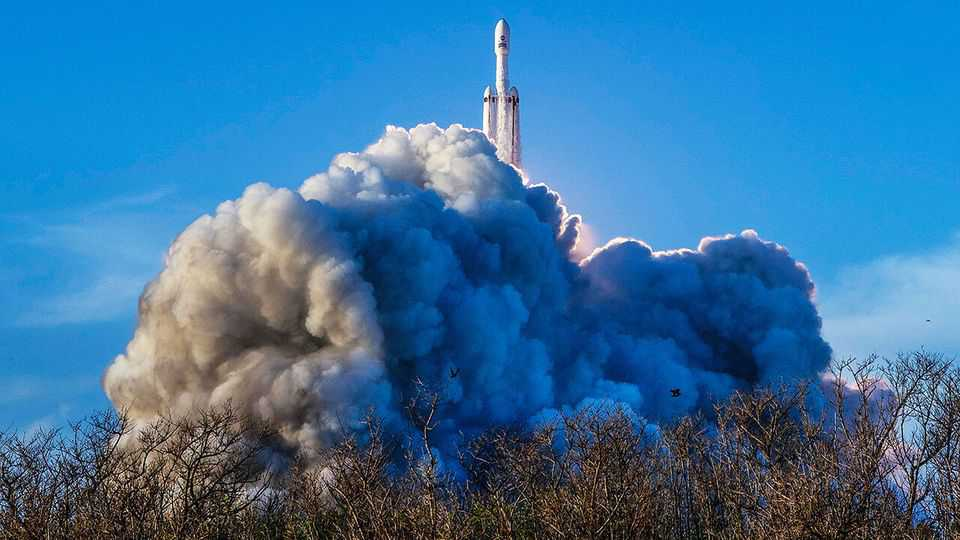

NASA’s latest mission to map the cosmos takes off
It will study dark matter, dark energy and far-distant planets

Sep 3rd 2026
On August 30th at 11.26 Universal Time, the Nancy Grace Roman Space Telescope—NASA’s newest eye in the sky—took off from the Kennedy Space Centre, in Florida, aboard a SpaceX Falcon Heavy rocket. The telescope, named after NASA’s first chief astronomer, is now heading for a parking spot in orbit around 1.6m kilometres from Earth. From there, it will provide astronomers with an unprecedented view of the universe.
Two particular gadgets will assist in this. One is the Wide Field Instrument (WFI), a 300-megapixel camera that will snap pictures in both visible light and infrared. It will thus be able to see distant galaxies whose light has been stretched to infrared wavelengths by the expanding universe. And, as its name suggests, the WFI’s field of view is huge—over 100 times larger than the camera of its original predecessor, the Hubble Space Telescope.
Paradoxically, two of the WFI’s targets will not appear in any of its photos. At least not directly. They are dark matter and dark energy—a pair of mysterious phenomena that reveal themselves only through the ways in which they bend and stretch the fabric of spacetime. Astronomers know they are there, but not what they actually are (though, as the previous story outlines, a particle of dark matter may just have been detected). They will therefore use the WFI’s souped-up optics to search for clues by tracking how these cosmic oddities have influenced the universe’s other matter over the course of its history.
Also in the WFI’s sights are exoplanets: worlds orbiting far-flung stars. The instrument is expected to discover around 100,000 of these alien worlds, a huge increase over the roughly 6,000 now known. It will see few of them directly. Instead, it will look for small blips in the light emitted by distant stars, which reveal the presence of planets passing in front of them.
To see exoplanets directly requires a lighter touch. That is where the other instrument—a coronagraph—comes in. This blocks the glare from stars to reveal planets that orbit them. As Dmitry Savransky of Cornell University, who works on the instrument, explains, the focus is on bright, nearby stars. The brighter a star, the more light an orbiting planet can reflect. And by “nearby”, Dr Savransky means within 100 light-years. Earth-like planets in this neighbourhood are too small and too close to their host stars to see with current equipment. But the Roman’s coronagraph might be able to snap pictures of exoplanets similar to Jupiter.
While the Roman telescope’s voyage through space has only just begun, its journey to the launch pad was arduous. In 2025 the Trump administration tried to cut NASA’s science funding by almost 50% and scrap the Roman telescope altogether. The thousands of scientists who contributed to the mission might be forgiven, then, for feeling a little puzzled when the post-launch news conference was interrupted by Donald Trump himself. Mr Trump congratulated NASA’s scientists on the launch and reminded them: “I’m supplying you all that money.” When mulling future funding cuts, Mr Trump will, with luck, put that money where his mouth is. ■